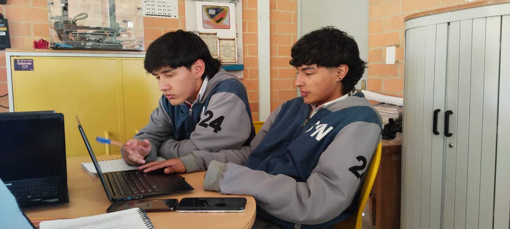
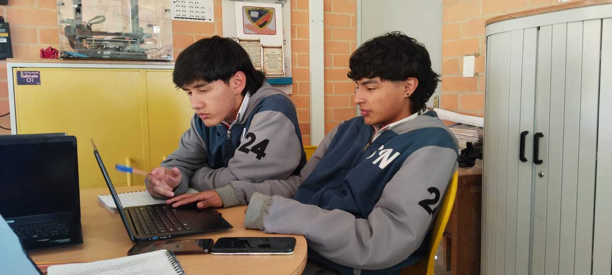
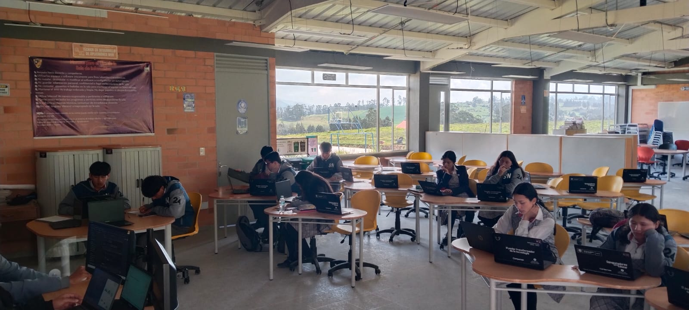
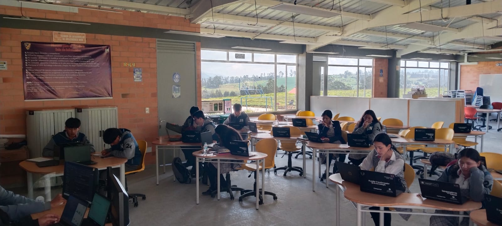
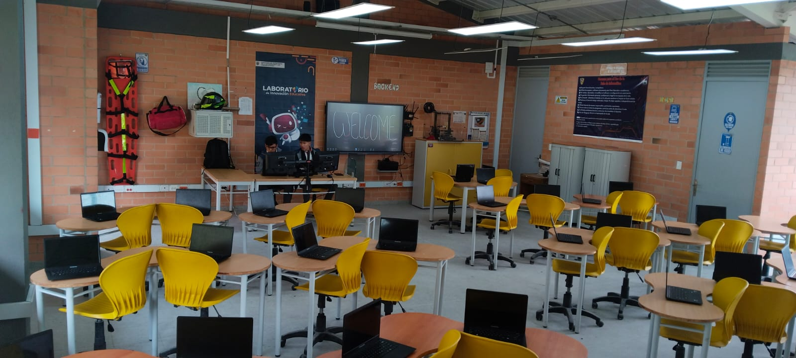
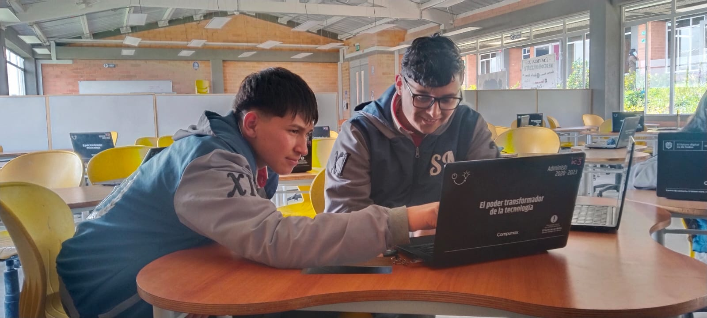
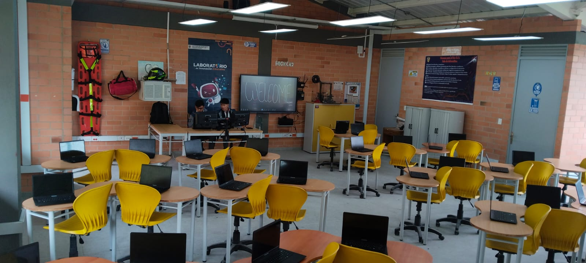
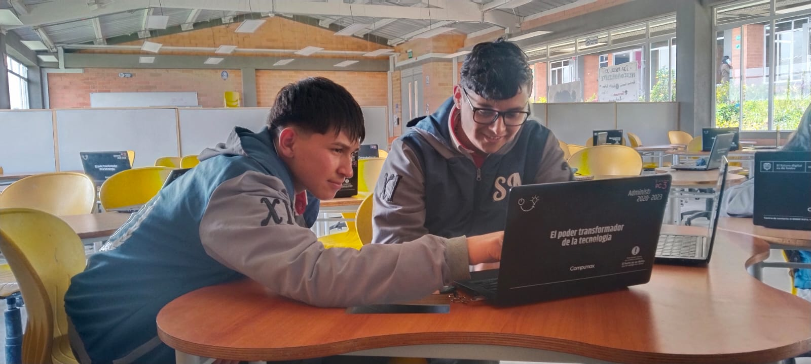

Es de esta manera que desde el 2023 la señora rectora de la Institución Educativa San Nicolas decidió implementar el técnico en desarrollo de aplicaciones web en el grado 10°, quienes serían la primera muestra de esta implementación, aunque este proyecto fue en el año 2023 en el grado 10°, la institución educativa ya brindaba un servicio de enseñanza con una materia denominada “pensamiento computacional”, con una intensidad horaria de 2 horas a la semana, para que los estudiantes ya tuvieran un conocimiento previo y por ende se les facilitara comprender las prestaciones que brinda este proyecto; Cabe aclarar que el proceso que llevo a cabo la realización de esta implementación, tiene una historia interesante, la señora rectora de la institución desde el año 2022 tenía el ideal de que la institución llegará a ser técnica sin la necesidad de articularse a instituciones universitarias, por esto mismo comenzó a pedir la evolución de la institución en secretaria de educación, siendo escuchada y plateando el proyecto pertinente para poder llevar a cabo este ideal, así, desde secretaria de educación se evaluó y se dio apertura para realizar este proyecto en la Institución Educativa San Nicolas, después de una presentación del proyecto en la institución, en la cual el profesor encargado Ing. Jeferson Leonel Fonseca Soto dio a conocer a parte de la comunidad de que trataba esta nueva técnica a implementar, apoyándose en un informe sumamente detallado y en la declaración de dos estudiantes de la institución, quienes ya estaban familiarizados con esta implementación técnica, es de esta manera que fueron participes la señora rectora, profesores, estudiantes y un delegado de la secretaria de educación, quien finalmente fue quien dio el veredicto final y aprobó la implementación del técnico en la nueva Institución Técnica, actualmente con la aprobación de este proyecto, los estudiantes de grado 11° (2024), población muestra en 10° (2023), presentan sus proyectos orientados en el técnico del cual fueron participes durante los 2 años prueba (2023-2024), denotando así, que este técnico ha sido una meta cumplida y que ha logrado su objetivo de manera eficiente y satisfactoria y se espera lo siga siendo durante los años posteriores en la institución.
Sé parte de nuestra historia y construye tu futuro aquí.
"Queremos y Podemos"

 


 


 




INFORMACIÓN ACERCA DEL TÉCNICO DE LA INSTITUCIÓN EDUCATIVA:
En la Institución Educativa Técnica San Nicolás, anteriormente se realizaba una articulación con la UPTC para ofrecer un programa de “Técnico en producción y transformación del acero”, donde los estudiantes aprendían sobre el manejo del acero y otros metales, beneficiándose de la cercanía con la siderurgia “Diaco”. Sin embargo, al observar la falta de interés de los alumnos en continuar su educación superior en este ámbito, la rectora decidió, en 2023, implementar un nuevo proyecto educativo. Este proyecto busca convertir la institución en técnica y ofrecer una especialización en diseño de aplicaciones web, sin depender de una articulación directa con universidades.
INFORMACIÓN ACERCA DE LA INSTITUCIÓN EDUCATIVA TÉCNICA SAN NICOLÁS:
La Institución Educativa Técnica San Nicolas ha llevado una gran historia consigo, a continuación, se presenta una pequeña reseña de esta: La Institución Educativa San Nicolás fue fundada en 1957 y ha crecido mucho desde entonces. Comenzó en las casas de las familias, pero hoy en día tiene su propia infraestructura gracias a la ayuda de la comunidad. En 1997, durante el mandato del Doctor Alcides Gómez, se creó la posprimaria rural, lo que permitió a los jóvenes de la región continuar sus estudios hasta el grado noveno.
Esto fue un gran avance en el desarrollo educativo de la comunidad. Es de este modo que, en octubre de 2003 con la resolución 5762, se fusionaron las escuelas Jorge Eliecer Gaitán y el Salvial, adoptando el nombre de Colegio de Educación Básica “San Nicolás”. Esto ayudó a unir y mejorar los recursos educativos. Más tarde, en 2007, se fusionó con la escuela de Siderurgica con la resolución 4884. En 2009, la institución cambió su nombre oficialmente a Institución Educativa “San Nicolás”. Para ofrecer educación a más estudiantes, en 2008 se inició la básica secundaria en la sede Siderúrgica, y ahora ofrece el grado octavo. La institución quiere ofrecer educación media y eventualmente articularla con la educación superior. Desde 2006, Ana Jaqueline Saganome López ha sido la rectora, liderando la institución con dedicación y compromiso. Actualmente, la institución cuenta con 19 profesores y 2 administrativos, quienes trabajan juntos para ofrecer una educación de calidad y ayudar a que los estudiantes se desarrollen plenamente. (Soto, 2023).